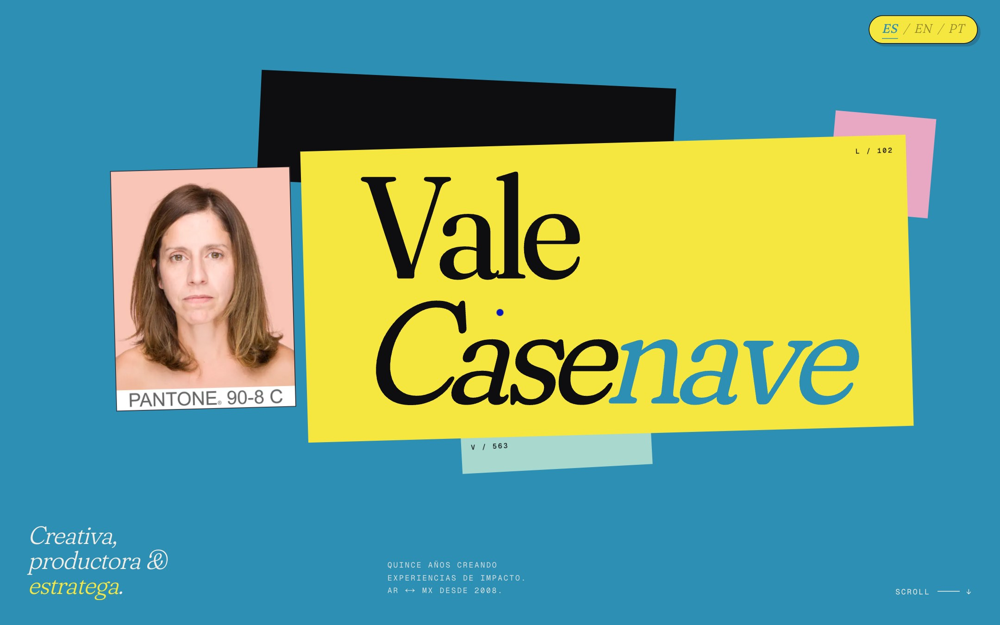
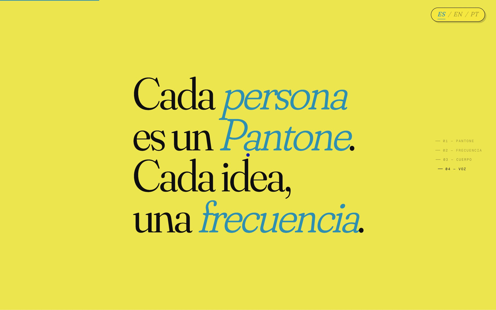
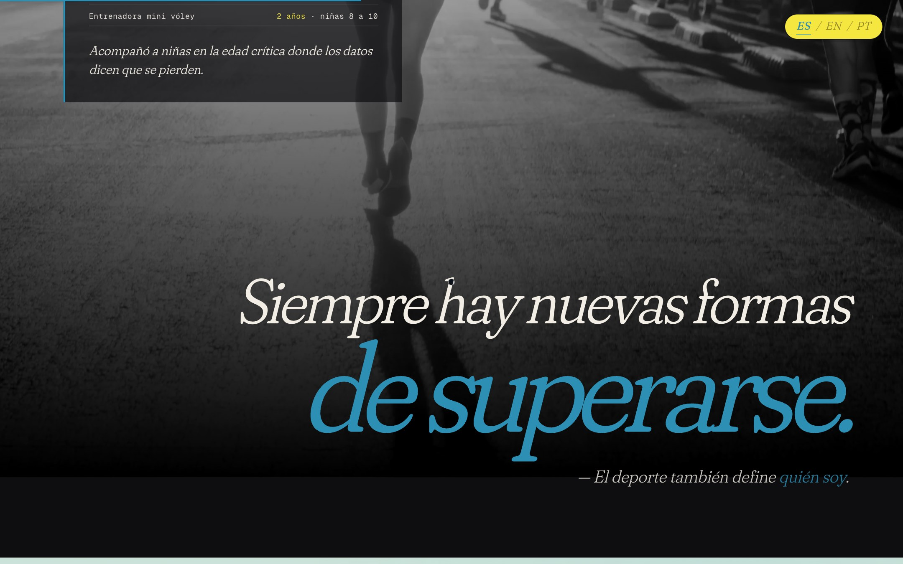
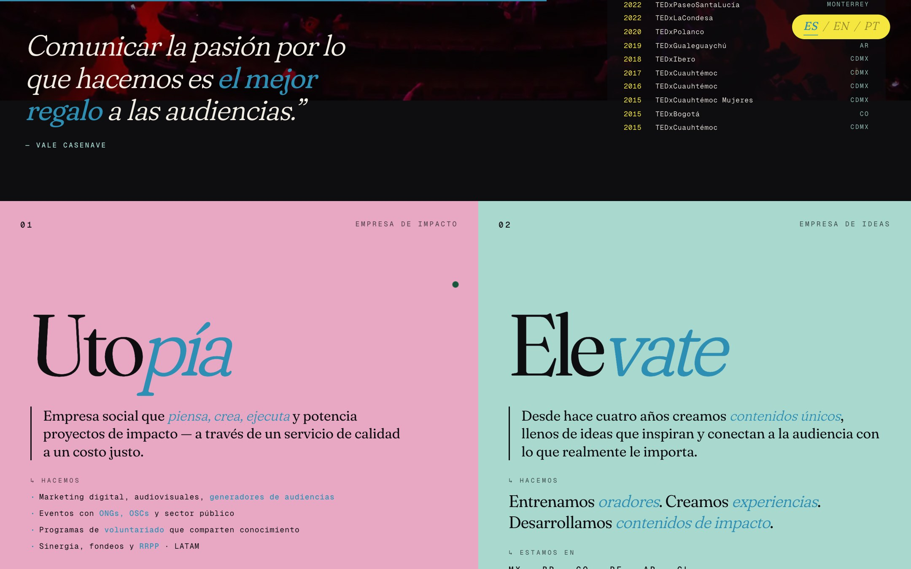
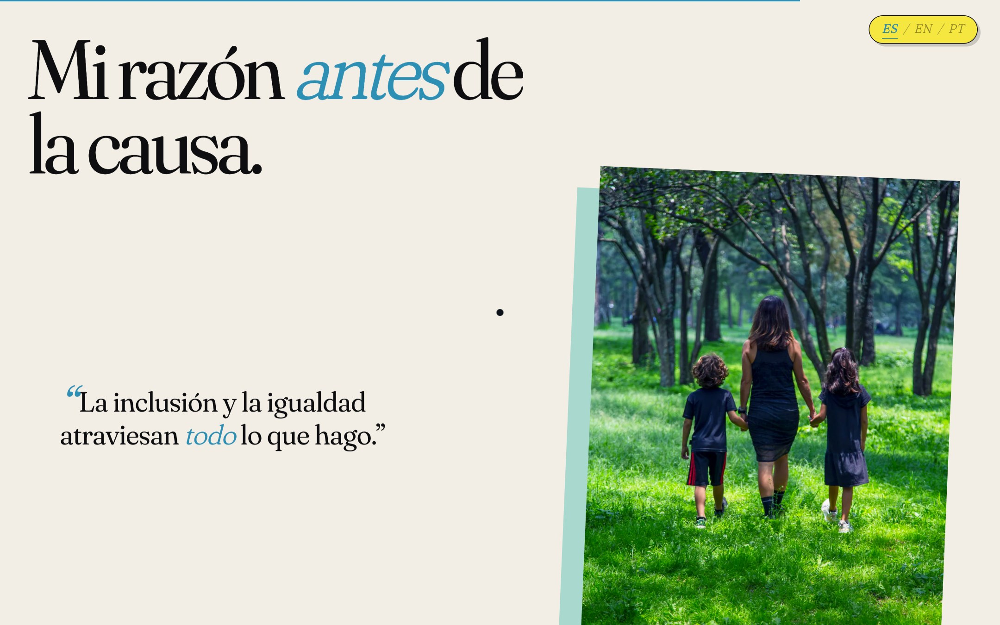
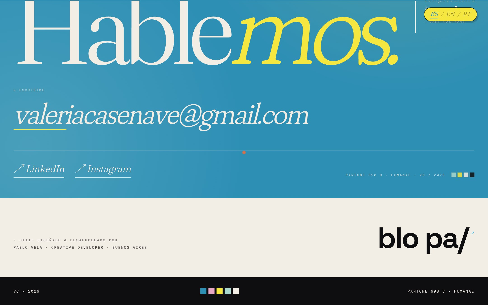

Vale Casenave
Creativa, productora & estratega — AR ↔ MX
El problema
Vale Casenave lleva quince años creando experiencias de impacto entre Argentina y México — producción de TEDx, entrenamiento de oradores, comunicación de causas. Su trayectoria estaba dispersa entre LinkedIn, notas en medios y proyectos paralelos. Necesitaba un sitio que funcionara como manifiesto: que ordenara sus capítulos, conectara la causa con la persona y se leyera tan editorial como su trabajo.

La solución
Un sitio editorial estructurado en capítulos — About, Manifiesto, Cifras, Cuerpo, Contexto, Voz, Empresas, Publicaciones, Raíz y Contacto — bajo el concepto Pantone 698 C, el código de piel que el proyecto Humanae de Angélica Dass le asignó. Cada sección funciona como una página de revista: tipografía grande, fichas laterales, datos con fuente y citas curadas.
Diseñado y desarrollado en Next.js 16 con App Router, internacionalización completa en ES · EN · PT vía next-intl, ruteo localizado, sitemap dinámico, y CSS Modules por componente para mantener la voz visual de cada capítulo. Loader propio, scroll progress, cursor custom y reveals on-scroll que respetan el ritmo de lectura.





Paleta
Tipografía
Geist Sans
Geist Mono
Features
- Estructura editorial en 10 capítulos numerados
- Multilenguaje ES · EN · PT con next-intl y rutas localizadas
- Loader inicial con identidad Pantone 698 C
- Cursor custom, scroll progress y reveals on-scroll
- Parallax controlado por hook propio (useParallax)
- Side-rail con índice navegable por sección
- Bloque Cifras con +400 oradores, ×13 TEDx, ×6 maratones
- Galería de publicaciones agrupadas por tema
- Concepto Humanae · A. Dass integrado en branding
- Sitemap y robots dinámicos por idioma
- Geist Sans + Geist Mono cargadas vía next/font